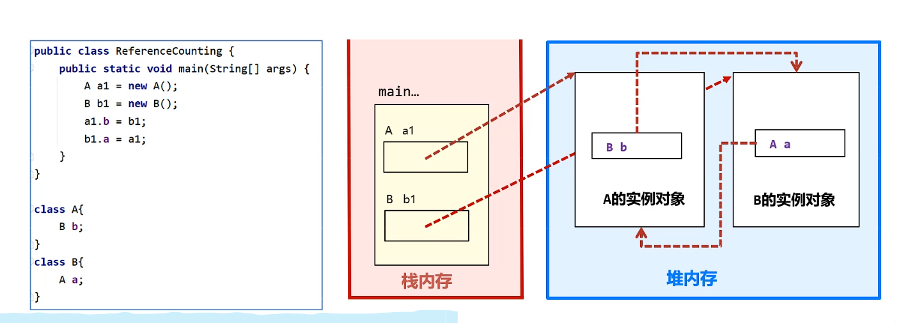
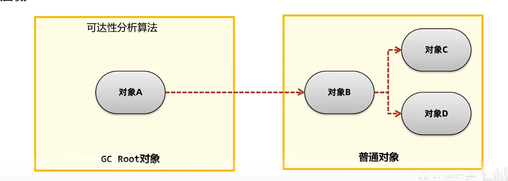
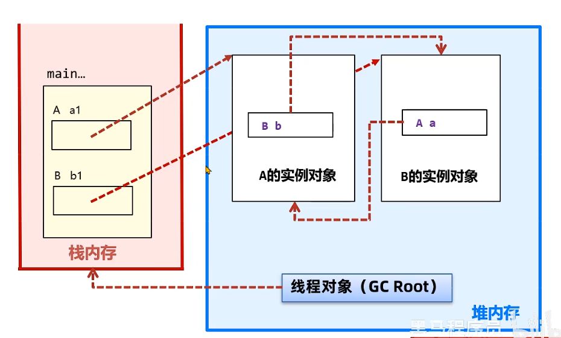
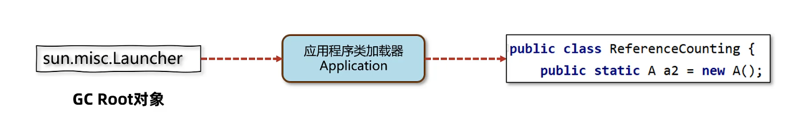
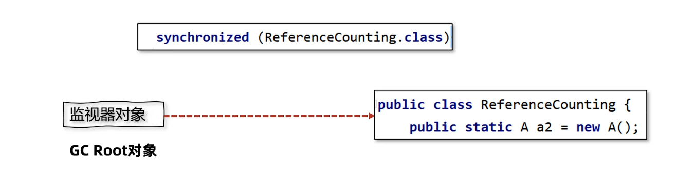

8-如何判断需要回收
如何判断需要回收
自动垃圾回收
C/CPP 没有自动垃圾回收，需要手动释放，否则内存泄漏
Java引入了自动垃圾回收，回收不使用的对象
自动回收
优点：降低难度，降低对象回收BUG的可能
缺点：程序员无法控制及时性
手动回收
优点：回收及时性高
缺点：容易悬空指针，重复释放，内存泄漏
系统僵死：系统忙于垃圾回收
方法区的回收
这里相当于类的生命周期中的卸载
三个条件满足才可以：
这个类的实例对象已经被回收，在堆中不存在任何该类的实例对象以及子类对象
加载这个类的类加载器已经被回收
这个类的
java.lang.Class对象没有再被引用
System.gc() 手动发送垃圾回收的请求
JSP的热部署：每个Jsp文件对应一个唯一的类加载器，当一个jsp文件被修改了，直接卸载这个 jsp 类加载器，重新创建类加载器，重新加载jsp 文件
堆内存的回收
如何判断堆对象能否被回收？主要看引用
但是需要处理循环引用问题

两种方法：
引用计数法：每个对象有个计数器维护被引用的次数。但是解决不了循环引用问题，同时计数器需要维护开销
可达性分析法：把对象分为两类：垃圾回收的根对象（GC Root） 和普通对象。
GC Root 可达不可被回收。

GC Root 对象
线程 Thread 对象，引用线程帧栈中的方法参数，局部变量等
系统类加载器加载的
java.lang.Class对象，引用类的静态变量监视器对象，用来保存同步锁
synchronized关键字持有的对象本地方法调用时的全局对象
可达性分析算法：不需要维护引用计数器，也解决了循环引用问题



引用类型
强引用
软引用：如果只有软引用，内存不足就会回收。常用于缓存。
使用 SoftReference类（看成一个盒子）或者继承 SoftReference 类。
SoftReference 本身也需要被回收，可以通过软引用队列拿到 Ref 的引用对象。这时候遍历队列，删除强引用即可。
1 | ReferenceQueue<byte[]> queues=new ReferenceQueue<>(); |
弱引用：不管内存够不够，如果只有弱引用都会被回收。主要在
ThreadLocal，也可以使用队列获得被回收的弱引用本身。虚引用：幽灵引用或者幻影应用，不能通过虚引用拿到对象。唯一用途是被回收有通知。直接内存为了及时知道直接内存对象不再使用，从而回收内存，使用虚引用。
1 | //1. 创建 ByteBuffer 对象并返回 |
终结器引用。 对象回收时，终结器引用会关联对象并且放置在
Finalizer类的引用队列，稍后一条由FinalizerThread线程从队列中获取对象，然后执行对象的finalize方法（最多调用一次）。在对象第二次回收时，才会真正回收，如果这个过程在
finalize方法把自己关联在强引用关联，可以自救